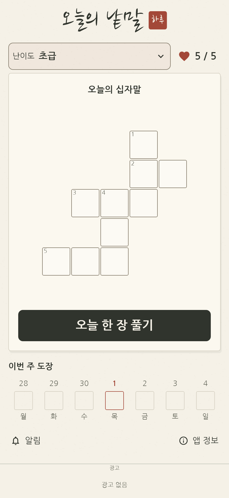
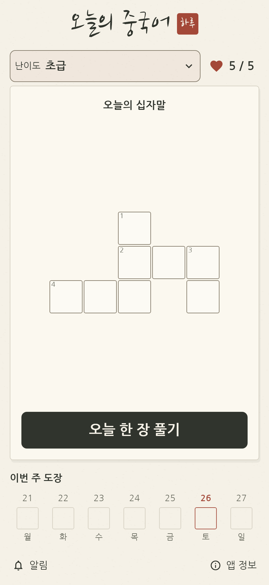
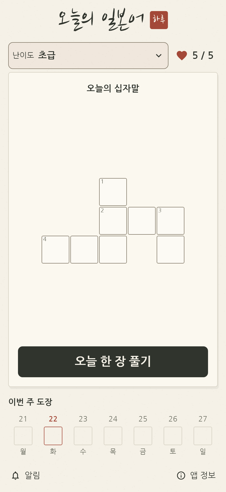
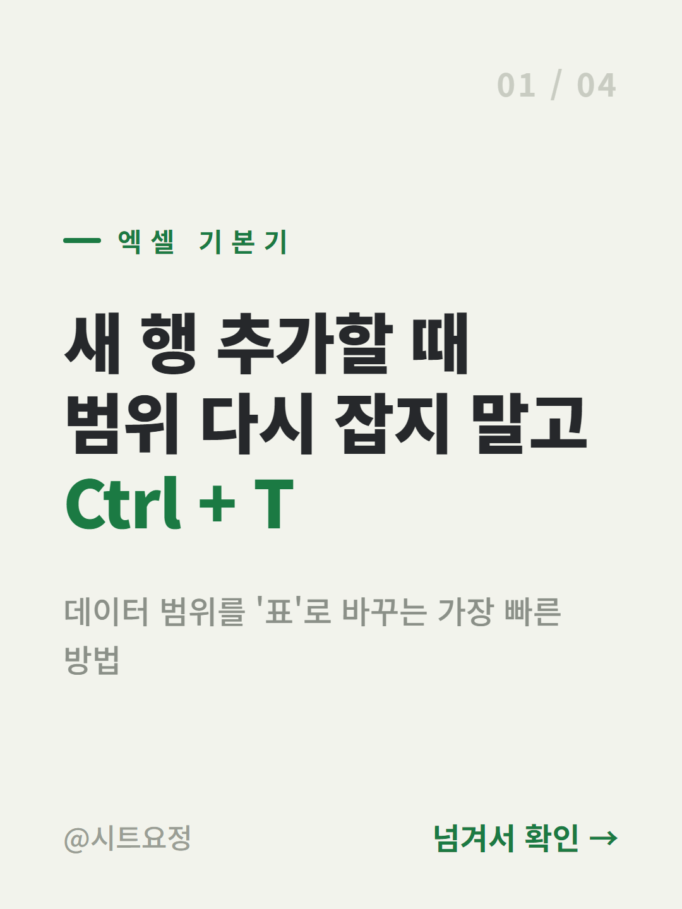

다음에 만들 것은 아직 비워둡니다.
만든 것
일상에서 출발한 작은 프로젝트들
쓰레드 자동 포스팅
영상 소재 정리부터 글 작성·검수·발행 확인까지 이어주는 쓰레드 콘텐츠 도구.
- Python
- Apps Script
- Claude API
- 텔레그램
블로그 자동 포스팅
글감 조사·초안·이미지·검수를 채널별로 나눈 블로그 작업 도구.
- Python
- 크롬 확장
- Apps Script
- 텔레그램
한 줄 육아
일상의 짧은 기록을 함께 남기고 찾아보는 가족용 일기 앱.
- Flutter
- Firebase
- Android
작업 기록 사이트
지금 보고 계신 이 사이트. 마크다운 파일을 올리면 알아서 페이지가 된다.
- Python
- GitHub Pages
- GitHub Actions
pushdown
휴대폰 사용 시간을 운동과 연결해 조절하는 안드로이드 앱.
- Kotlin
- Jetpack Compose
- Android
인스타툰 공장
짧은 기록을 장면으로 나눠 만화 제작 흐름으로 연결하는 도구.
- Apps Script
- Claude API
- Gemini API
- 텔레그램
오늘의 낱말
큰 글씨와 편한 입력으로 가볍게 즐기는 우리말 십자말 앱.

- Flutter
- Dart
- 앱인토스
오늘의 중국어
한국어 뜻으로 중국어 낱말을 풀고 병음으로 복습하는 십자말 앱.

- Flutter
- Dart
- Android
오늘의 일본어
히라가나로 답을 채우고 한자 표기까지 함께 보는 일본어 십자말 앱.

- Flutter
- Dart
- Android
대만 성어 십자말
번체자 성어를 퍼즐로 풀고 주음과 예문으로 복습하는 앱.
- Flutter
- Dart
- Android
시트 콘텐츠 제작 도구
마크다운 원고를 카드 이미지와 짧은 영상으로 바꾸는 제작 도구.

- Python
- Playwright
- FFmpeg
시트 도트 영상 도구
영상 프레임을 픽셀로 바꾸고 시트 모티프 영상으로 구성하는 도구.
- Python
- FFmpeg
- Apps Script
책새김
사진과 짧은 글로 읽은 책과 남기고 싶은 문장을 기록하는 앱.
- Flutter
- Firebase
- Android
독서클럽 사이트
시트에 정리한 책 목록과 모임 기록을 웹에서 보여주는 도구.
- Apps Script
- Google Sheets
- HTML
맛집 블로그 글 작성기
방문 메모와 작성 조건을 모아 블로그 초안 작성을 돕는 도구.
- Python
- 데스크톱 UI
테셋 메이트
문제 풀이와 오답 복습, 학습 기록을 연결하는 개인용 웹 앱.
- TypeScript
- Next.js
- Python
낱말밭
낱말 타일을 배치하며 퍼즐을 푸는 가벼운 웹 게임.
- HTML
- CSS
- JavaScript
사흘
갤러리 사진을 묶어 기록할 재료로 정리하는 안드로이드 앱.
- Kotlin
- Jetpack Compose
- Room
항공권 가격 알림
항공권 가격 변화를 확인하고 알림으로 전달하는 개인용 도구.
- Python
- 텔레그램
유튜브 영상 파이프라인
자막과 영상 검사, 작업 목록 관리를 연결하는 제작 파이프라인.
- Python
- FFmpeg
- Google Sheets
육아템 알림
소재와 게시 대기 작업을 관리하고 알림으로 연결하는 콘텐츠 도구.
- Python
- Threads API
- 텔레그램
작업 일지
만들고, 고치고, 기록합니다.
2026년 · 작업 정리
짧은 영상 제작에 필요한 기반 도구 만들기
정리됨기존에 만든 영상 제작 파이프라인의 기반 코드를 정리했습니다. 자막 생성, 출력 영상 검사, 시트의 대기 작업 읽기와 결과 알림 기능을 나누어 구현했습니다.
반복 작업에 변화를 주는 구성도 포함했습니다. 현재 확인한 것은 개별 제작·검사 도구이며, 처음부터 게시까지 전 과정이 자동으로 완료되는 서비스로 소개하지 않습니다.
2026년 · 작업 정리
낱말 퍼즐의 답이 하나인지 확인하는 과정
정리됨기존에 만든 낱말 퍼즐 웹 프로토타입을 정리했습니다. 타일 배치 화면과 퍼즐 생성 흐름을 만들고, 되짚기 탐색으로 해가 하나인지 확인하는 로직을 넣었습니다.
진행 상태는 브라우저에 저장합니다. 단어 자료와 난이도를 다듬고 실제 사용자의 플레이를 확인하는 일은 남아 있습니다.
2026년 · 작업 정리
콘텐츠 대기 작업과 게시 확인을 분리했습니다
정리됨기존에 만든 콘텐츠 운영 도구를 정리했습니다. 준비한 소재와 게시할 작업을 대기 목록으로 관리하고, 게시·답글 처리와 알림을 나누었습니다.
진행 기록에서 발행을 멈춘 상태를 확인해 현재 상태를 멈춤으로 표시했습니다. 계정 지표나 내부 운영 규칙 대신 구현한 작업 흐름만 공개합니다.
2026년 · 작업 정리
쓰레드 콘텐츠 작업을 단계별로 연결했습니다
정리됨기존에 만든 콘텐츠 파이프라인을 돌아보고 정리했습니다. 소재를 고르고, 글을 만들고, 게시 결과를 확인하는 일이 따로 흩어져 있었습니다.
소재 수집·상품 연결·글 작성·검수·발행을 단계별로 나누고, 시트에서 작업 상태를 확인하도록 구성했습니다. 소재 후보를 찾는 경로와 다른 환경에서 시작할 때의 설정 안내도 보완했습니다.
핵심은 글을 만들어 두는 것과 실제로 올라간 것을 구분하는 일입니다. 계정 정보와 내부 운영 기준은 공개 기록에서 제외했습니다.
2026년 · 작업 정리
문제 풀이와 오답 복습을 한 화면 흐름으로
정리됨기존에 만든 개인 학습용 웹 앱을 정리했습니다. 문제 자료를 읽어 연습하고, 틀린 문제를 다시 풀며 기록을 이어가는 흐름을 구현했습니다.
브라우저에 학습 기록을 보관하고 백업·복원으로 옮길 수 있게 구성했습니다. 공개하는 것은 앱의 구현 개요뿐이며 문제 원문, 자료 파일과 개인 학습 기록은 포함하지 않습니다.
2026년 · 작업 정리
성어와 생활 예문을 퍼즐에 담았습니다
정리됨기존에 만든 번체자 성어 학습 앱을 정리했습니다. 성어를 맞히는 퍼즐에 주음과 생활 예문을 붙여, 답을 확인한 뒤에도 표현을 다시 볼 수 있게 구성했습니다.
오프라인에서 사용할 체험판 형태로 개발하고 있습니다. 자체 편집한 학습 자료를 사용하며 공식 교육과정 인증이나 출시 완료로 소개하지 않습니다.
2026년 · 작업 정리
원고 하나에서 카드 이미지와 영상까지
정리됨기존에 만든 콘텐츠 제작 도구를 정리했습니다. 원고를 고칠 때마다 이미지 편집을 반복하지 않도록 마크다운과 HTML 템플릿을 연결했습니다.
카드 이미지를 렌더링하고 짧은 영상으로 묶는 작업까지 확장했습니다. 이미지·영상 산출물은 확인했으며, 파일을 만드는 단계와 외부 채널에 게시하는 단계는 구분합니다.
2026년 · 작업 정리
영상 프레임을 시트 모양으로 바꾸는 실험
정리됨기존에 만든 영상 처리 도구를 정리했습니다. 프레임의 색을 줄이고 픽셀 형태로 바꾸는 처리와, 이를 시트 모티프 화면으로 구성하는 흐름을 나눠 만들었습니다.
명령 실행과 설정 화면이 구현된 개발 단계입니다. 결과물의 표현 품질과 사용 소재의 권리는 별도로 확인해야 하므로 공개 배포가 끝난 제품으로 소개하지 않습니다.
2026년 · 작업 정리
갤러리 사진을 기록할 묶음으로 정리하기
정리됨기존에 만든 사진 정리 앱을 정리했습니다. 사진을 찍고도 글로 남기지 못하는 일을 줄이려고, 촬영 시각과 위치를 참고해 사진을 묶는 기능을 만들었습니다.
사진 스캔, 묶음 저장과 알림 관련 코드를 구현한 단계입니다. 개인 사진이나 위치 정보는 공개하지 않으며, 외부 서비스 연동과 실제 기기 동작을 모두 검증한 제품으로 소개하지 않습니다.
2026년 · 작업 정리
방문 메모를 초안으로 옮기는 수고를 줄이기
정리됨기존에 만든 글 작성 도구를 정리했습니다. 방문 메모와 글에 들어갈 조건이 흩어져 있어 초안을 쓸 때 다시 모아야 했습니다.
장소·키워드·방문 메모를 입력하는 화면과 작성 조건을 읽어 초안에 반영하는 흐름을 만들었습니다. 실제 경험을 꾸며 넣지 않고, 초안 생성과 게시를 구분합니다. 방문 장소나 개별 의뢰 내용은 공개하지 않습니다.
2026년 · 작업 정리
사진과 글을 함께 남기는 독서 기록
정리됨기존에 만든 독서 기록 앱을 정리했습니다. 책을 읽다 남긴 사진과 짧은 글을 한곳에서 다시 보고 싶어 시작한 앱입니다.
기록 작성, 목록·달력 보기, 검색과 내보내기 기능을 구현했습니다. 앱의 기능만 소개하고 실제 독서 메모나 개인 계정 정보는 공개하지 않습니다. 배포와 실사용 검증은 구현 여부와 구분해 기록합니다.
2026년 · 작업 정리
화면 사용 시간을 운동으로 끊는 앱을 정리했습니다
정리됨기존에 개발한 pushdown의 구성을 정리했습니다. 휴대폰을 계속 사용하는 흐름을 작은 운동 행동으로 끊어보려는 안드로이드 앱입니다.
사용 시간 추적, 중간 안내 화면, 일시정지와 기록 저장을 나누어 구현했습니다. Kotlin과 Jetpack Compose를 사용하고, 동작 판단 로직은 화면 코드와 분리되어 있습니다.
현재 포트폴리오에서는 개발 중인 앱으로 소개합니다. 이 기록을 위해 새로 실기 테스트나 스토어 배포를 진행한 것은 아니므로, 출시 완료나 실사용 효과를 확인했다고 적지 않았습니다.
초기 사이트 예시에 있던 센서 기반 운동 자동 인식 설명은 실제 구현 근거가 없어 제외했습니다. 현재 확인된 방식은 사용 시간을 측정하고 운동 완료를 기록하는 구조입니다.
2026년 · 작업 정리
직접 만든 앱과 자동화를 한자리에 모았습니다
정리됨흩어져 있던 앱과 자동화 중 구현 근거를 확인한 작업을 모았습니다. 과거 작업은 오늘 정리한 회고라고 밝혔고, 개발 중인 것과 운영 중인 것을 구분했습니다.
밝은 배경과 파스텔 카드로 화면을 다시 만들었습니다. 프로젝트 이름과 기존 주소, 프로젝트별 일지 연결은 유지했습니다.
발행 로직 검사와 데스크톱·모바일 너비의 브라우저 검사를 통과했습니다. 모바일 검사는 화면 크기를 바꾼 브라우저에서 진행했으며 실제 휴대폰 검수와는 구분합니다.
2026년 · 작업 정리
프로젝트 기록을 공개용으로 다시 정리했습니다
정리됨기존 사이트의 원본 저장소를 다시 연결하고, 현재 공개된 프로젝트 소개와 업데이트를 정리했습니다. 공부 메모는 옵시디언에 두고, 사이트에는 만든 프로젝트의 변화만 남기는 기준을 유지했습니다.
설명은 문제·구현 방식·확인된 결과를 중심으로 짧게 쓰고, 개인정보·계정 정보·고객 자료·내부 운영값은 제외하도록 공개 기준을 문서화했습니다. 이전 작업을 돌아보고 쓴 글에는 과거 작업 정리라는 점도 밝혔습니다.
디자인은 아직 바꾸지 않았습니다. 실제 사이트 화면으로 레퍼런스를 비교한 뒤 방향을 선택할 예정입니다.
2026년 · 작업 정리
일기에서 만화 제작으로 이어지는 연결을 만들었습니다
정리됨이전에 진행한 인스타툰 제작 도구의 연결 작업을 정리했습니다. 같은 내용을 일기 앱과 만화 도구에 다시 입력하는 번거로움을 줄이는 것이 출발점이었습니다.
일기에서 내용을 전달받는 흐름을 추가하고, 사용할 사람의 접근 권한을 확인하는 문제도 수정했습니다. 짧은 기록을 장면으로 나누는 제작 흐름과 이어지도록 구성했습니다.
그림체와 캐릭터 시안 확정은 남은 과제입니다. 안정적으로 완성된 제작 서비스로 소개하지 않고 만드는 중인 도구로 남겨두었습니다. 실제 가족 기록과 캐릭터의 개인 식별 정보는 제외했습니다.
2026년 · 작업 정리
히라가나 입력과 정답 복습을 연결했습니다
정리됨기존에 만든 일본어 십자말 앱을 정리했습니다. 한국어 단서로 낱말을 떠올리고 히라가나로 입력하는 흐름을 만들었습니다.
문제를 푼 뒤 한자나 가타카나 표기도 함께 볼 수 있습니다. 문제와 글꼴을 앱에 포함해 오프라인 사용을 고려했으며, 공개 출시는 아직 별도로 확인할 단계입니다.
2026년 · 작업 정리
십자말을 더 편하게 읽고 입력하도록
정리됨기존에 만든 십자말 앱을 정리했습니다. 작은 화면에서도 단서와 글자를 읽기 쉽도록 큰 글씨와 설명 확대, 입력 흐름을 다뤘습니다.
문제 데이터와 진행 상태를 기기에 보관하고, 안드로이드 앱과 웹 실행 환경을 함께 다루고 있습니다. 웹에서의 동작 확인과 실제 휴대폰에서의 확인은 구분하며, 정식 출시를 마친 앱은 아닙니다.
2026년 · 작업 정리
중국어 단어를 십자말로 익히는 앱
정리됨기존에 만든 중국어 십자말 앱을 정리했습니다. 한국어 설명을 읽고 간체자 타일을 골라 답을 채우는 방식입니다.
정답을 확인한 뒤 병음을 함께 보며 복습하고, 문제와 진행 상태는 기기 안에 보관하도록 만들었습니다. 난이도는 자체 편집 기준이며 공식 시험 인증이나 스토어 출시를 뜻하지 않습니다.
2026년 · 작업 정리
짧은 일기를 쓰고 다시 찾는 흐름을 정리했습니다
정리됨기존 육아일기 앱의 작업 내용을 정리했습니다. 기록을 오래 쓰려면 작성 화면뿐 아니라 다시 찾고 보관하는 흐름도 필요했습니다.
Flutter와 Firebase로 만든 일기 앱에 검색·백업·알림 관련 개선을 진행했고, 일기를 만화 제작 도구로 넘기는 연결 작업도 추가했습니다.
가족의 실제 일기, 사진, 이름과 접근 정보는 공개하지 않습니다. 포트폴리오에는 기록을 남기는 흐름과 도구 사이의 연결 방식만 남겼습니다.
2026년 · 작업 정리
시트의 모임 기록을 웹 화면으로
정리됨기존에 만든 독서클럽용 웹 도구를 정리했습니다. 책 목록과 모임 기록을 시트에 보관하고 웹 화면에서 읽는 구조로 만들었습니다.
Apps Script 코드와 화면 구현을 바탕으로 소개합니다. 실제 모임 이름과 구성원 정보는 제외했고, 정적 사이트로 옮기는 구상은 이전 완료로 적지 않았습니다.
2026년 · 작업 정리
블로그마다 다른 작성·검수 흐름을 정리했습니다
정리됨그동안 진행한 블로그 작업을 정리했습니다. 같은 글쓰기 도구라도 플랫폼마다 편집기와 저장 방식이 달라 하나의 흐름으로 묶기 어려웠습니다.
네이버·티스토리·워드프레스 작업을 채널별로 나누고, 근거 조사·본문 작성·이미지 준비·최종 검수를 분리했습니다. 워드프레스에서는 공식 자료와 본문을 대조한 뒤 공개 화면과 모바일 화면까지 확인한 작업 기록이 남아 있습니다.
네이버 자동 입력은 본문 순서와 실행 중인 확장 버전을 다시 확인하는 단계입니다. 모든 채널이 안정적인 완전 자동 발행 상태라고 표현하지 않고, 확인된 결과와 남은 문제를 구분해두었습니다.
2026년 · 작업 정리
항공권 가격을 반복해서 확인하는 일 줄이기
정리됨기존에 만든 가격 확인 도구를 정리했습니다. 조회 결과를 보관하고 이전 결과와 비교한 뒤 필요한 변화를 알림으로 전달하는 구조입니다.
조회·기록·비교·알림 코드를 나누어 구현했습니다. 예약이나 결제를 대신하지 않으며, 실제 여행 일정·동행자·예산과 알림 계정 정보는 공개하지 않습니다.
2026년 · 작업 정리
이 사이트를 만들었다
다듬는 중마크다운 파일만 쓰면 되는 구조로 만들었다. 파일 하나 추가하고 발행하면 끝.
프로젝트 목록 맨 끝에는 빈 칸을 하나 두기로 했다. 채워야 할 자리가 하나쯤 보이는 게 나을 것 같아서.
카드를 누르면 그 프로젝트 일지만 모아서 보여준다. 이름을 한글로 바꿨더니 예전 태그로 쓴 일지가 떨어져 나가서, 옛 이름도 같이 알아보게 고쳤다.
2026년 · 작업 정리
발행 간격을 조정했다
정리됨발행 간격을 조정했습니다. 세부 운영 주기와 물량은 공개 기록에서 제외합니다.
2026년 · 작업 정리
초안을 미리 준비하는 흐름으로 바꿨다
정리됨아침에 앉아서 글감부터 고르는 게 제일 오래 걸렸다. 밤에 미리 돌려두니 아침엔 검수만 하면 된다.
2026년 · 작업 정리
알림이 두 번 오던 거 잡음
정리됨한 명이 쓰면 양쪽 폰에 다 울렸다. 쓴 사람은 빼고 보내게 고쳤다.
2026년 · 작업 정리
캐릭터 시안에서 멈춰 있다
러프그림체가 컷마다 미묘하게 달라진다. 시안을 먼저 확정해야 다음으로 넘어갈 수 있을 것 같다.
소개
혼자 만들고, 혼자 굴립니다.
손이 가는 일을 자동화하고, 만든 것과 만드는 중인 것을 여기 적어둡니다. 대단한 걸 만들려던 건 아니고, 매번 같은 일을 두 번 하기 싫어서 시작했습니다.
기록은 다듬어지기 전에 올립니다. 러프한 채로 남겨두는 편이 나중에 도움이 됐습니다.